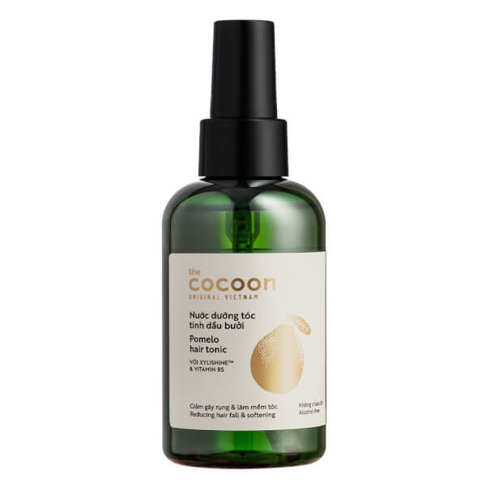

Hãy cùng nhau khám phá tác dụng của Nước dưỡng tóc tinh dầu bưởi Cocoon .

Sử dụng nước dưỡng tóc Cocoon mỗi ngày để giúp tóc dài và chắc khoẻ hơn.
Nước dưỡng tóc tinh dầu bưởi Cocoon với chiết xuất tinh dầu bưởi nguyên chất từ vỏ bưởi, kết hợp với hoạt chất Xylishine và Vitamin B5.
Đem đến những công dụng như sau:
Tinh dầu vỏ bưởi: Do có tính kháng khuẩn và chống oxy hóa cao, tinh dầu vỏ bưởi giúp ngăn ngừa nhiễm trùng, mang lại cho bạn da đầu và tóc khỏe mạnh, cải thiện rõ rệt tình trạng gãy rụng tóc.
Hỗ trợ phục hồi tóc.
Xylishine: Được chiết xuất từ các loại đường tự nhiên từ gỗ và từ tảo nâu Pelvetia Canaliculata giúp cấp ẩm và tăng cường độ bóng của tóc.
Vitamin B5 (D-panthenol): Chức năng như một tác nhân dưỡng tóc để cung cấp độ ẩm lâu dài cho tóc, ngăn ngừa hư tổn, làm dày tóc và cải thiện độ bóng khỏe của mái tóc.
Bên cạnh đó, nước dưỡng tóc tinh dầu bưởi Cocoon còn có các đặc điểm nổi bật khác, chẳng hạn như:.
Không chứa cồn (Alcohol free), không Paraben (Paraben free), 100% thuần chay.